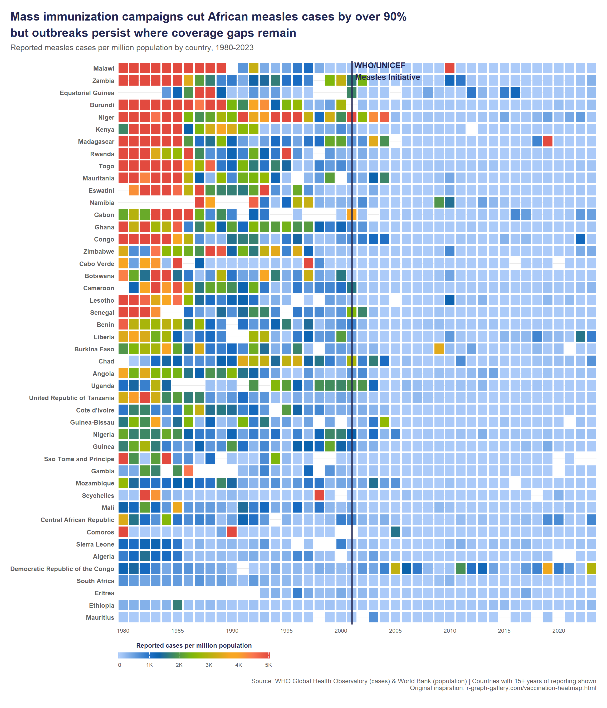

library(ggplot2)
library(dplyr)
source("../../synthesized-lessons/_common/theme_bka.R")
# ---- Load pre-processed data ----
# Built from WHO GHO API (cases) + World Bank API (population)
# To regenerate: source("../data/prep_africa_measles.R")
africa_measles <- read.csv("../data/africa_measles.csv")
# ---- Sort countries by average pre-2001 case rate (highest at top) ----
# See Lesson 1.2 (Aesthetics) — factor() with custom levels for y-axis ordering
country_order <- africa_measles %>%
filter(year < 2001) %>%
group_by(country) %>%
summarise(avg_rate = mean(cases_per_million, na.rm = TRUE), .groups = "drop") %>%
arrange(avg_rate) %>%
pull(country)
africa_measles <- africa_measles %>%
mutate(country = factor(country, levels = country_order))
# ---- BKA multi-stop gradient ----
# See Lesson 2.4 (Palettes) — colorRampPalette() creates smooth multi-stop gradients
# Asymmetric split: 15 steps for low-mid range, 5 for high = visual urgency at top end
measles_gradient <- c(
colorRampPalette(c("#ACCBF9", "#005CB9", "#83BD00", "#F8A623"))(15),
colorRampPalette(c("#F8A623", "#FA7650", "#E24A3F"))(5)
)
# ---- The heatmap ----
ggplot(africa_measles, aes(x = year, y = country, fill = cases_per_million)) +
# See Lesson 1.4 (Geometries) — geom_tile() with white borders
geom_tile(colour = "white", linewidth = 0.4,
width = 0.9, height = 0.9) + # Tufte: white space between tiles
# See Lesson 2.4 (Palettes) — scale_fill_gradientn() for multi-stop gradients
scale_fill_gradientn(
colours = measles_gradient,
limits = c(0, 5000),
breaks = seq(0, 5000, by = 1000),
labels = c("0", "1K", "2K", "3K", "4K", "5K"),
na.value = "#F5F5F5",
name = "Reported cases per million population",
oob = scales::squish, # Squish outliers beyond 5000 to the max color
# See Lesson 2.5 (Legend Styling) — guide_colourbar() for continuous legends
guide = guide_colourbar(
barwidth = 15, barheight = 0.6,
title.position = "top",
title.hjust = 0.5,
ticks = TRUE, nbin = 50
)
) +
# See Lesson 1.7 (Scales) — expand = c(0,0) removes padding
scale_x_continuous(expand = c(0, 0),
breaks = seq(1980, 2020, by = 5)) +
# See Lesson 3.2 (Annotations) — geom_vline() marks a policy milestone
geom_vline(xintercept = 2001, color = bka_colors$title_dark,
linewidth = 1.2, alpha = 0.8) + # Cairo: annotations are essential, not optional
# See Lesson 3.2 (Annotations) — annotate("text") for floating labels
annotate("text", label = "WHO/UNICEF\nMeasles Initiative",
x = 2001, y = length(country_order) + 0.5,
hjust = -0.05, vjust = 1,
size = 4, fontface = "bold", family = "Lato",
color = bka_colors$title_dark) +
coord_cartesian(clip = "off") + # Prevent annotation text from being clipped
# See Lesson 3.1 (Titles & Captions) — Minto-style title states the insight
labs(
title = "Mass immunization campaigns cut African measles cases by over 90%\nbut outbreaks persist where coverage gaps remain",
subtitle = "Reported measles cases per million population by country, 1980-2023",
x = NULL, y = NULL,
caption = paste0(
"Source: WHO Global Health Observatory (cases) & World Bank (population) | ",
"Countries with 15+ years of reporting shown\n",
"Original inspiration: r-graph-gallery.com/vaccination-heatmap.html"
)
) +
# See Lesson 2.2 (Custom Themes) — theme_bka() + heatmap-specific overrides
theme_bka() +
theme(
panel.grid = element_blank(), # Tufte: no gridlines for heatmaps
axis.line = element_blank(),
axis.text.y = element_text(size = 9, face = "bold", family = "Lato", hjust = 1), # Few: readable with many rows
axis.text.x = element_text(size = 8),
legend.position = "bottom",
legend.direction = "horizontal",
legend.title = element_text(size = 9, face = "bold",
color = bka_colors$title_dark),
legend.text = element_text(size = 8, color = bka_colors$subtitle_gray),
plot.title = element_text(lineheight = 1.15),
plot.margin = margin(15, 15, 25, 15)
)